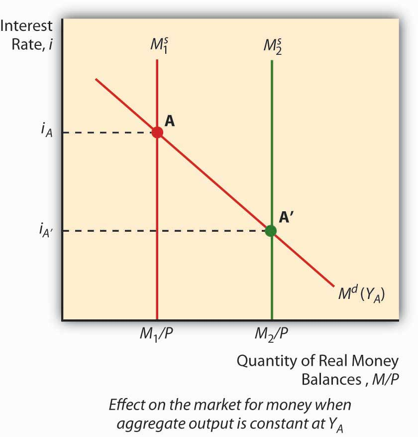
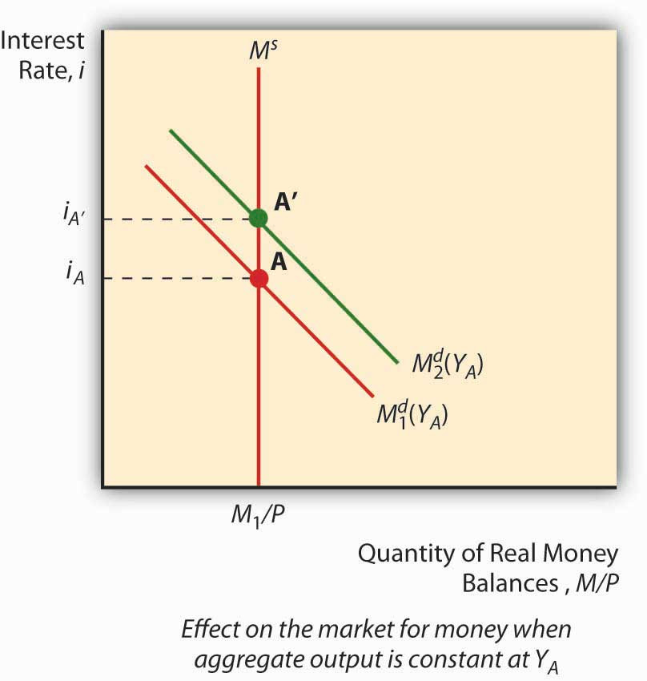
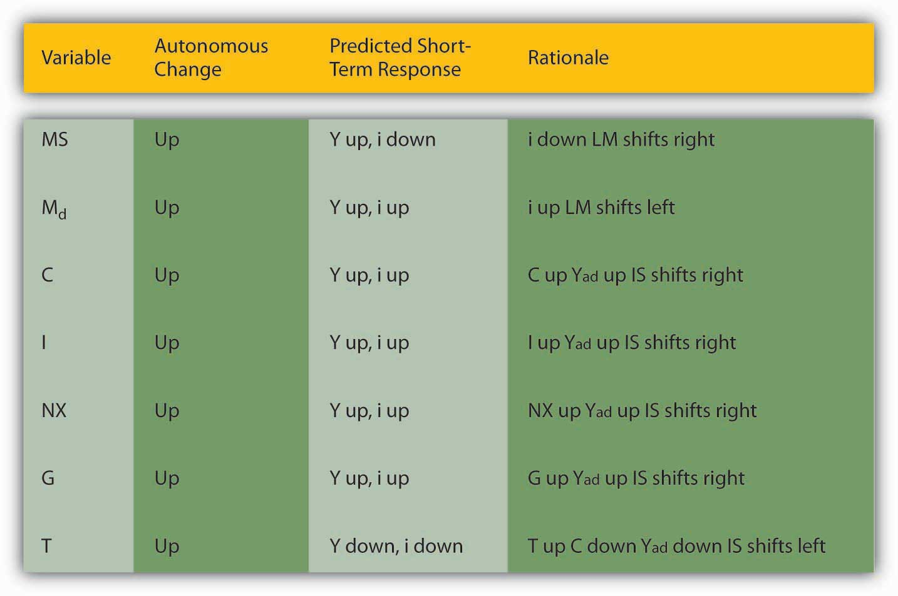

Policymakers can use the IS-LM model developed in Chapter 21 "IS-LM"to help them decide between two major types of policy responses, fiscal (or government expenditure and tax) or monetary (interest rates and money). As you probably noticed when playing around with the IS and LM curves at the end of the previous chapter, their relative positions matter quite a bit for interest rates and aggregate output. Time to investigate this matter further.
The LM curve, the equilibrium points in the market for money, shifts for two reasons: changes in money demand and changes in the money supply. If the money supply increases (decreases), ceteris paribus, the interest rate is lower (higher) at each level of Y, or in other words, the LM curve shifts right (left). That is because at any given level of output Y, more money (less money) means a lower (higher) interest rate. (Remember, the price level doesn’t change in this model.) To see this, look at Figure 22.1 "Effect of money on interest rates when output is constant".
Figure 22.1 Effect of money on interest rates when output is constant
An autonomous change in money demand (that is, a change not related to the price level, aggregate output, or i) will also affect the LM curve. Say that stocks get riskier or the transaction costs of trading bonds increases. The theory of asset demand tells us that the demand for money will increase (shift right), thus increasing i. Interest rates could also decrease if money demand shifted left because stock returns increased or bonds became less risky. To see this, examine Figure 22.2 "Effect of an autonomous change in money demand when output is constant". An increase in autonomous money demand will shift the LM curve left, with higher interest rates at each Y; a decrease will shift it right, with lower interest rates at each Y.
Figure 22.2 Effect of an autonomous change in money demand when output is constant
The IS curve, by contrast, shifts whenever an autonomous (unrelated to Y or i) change occurs in C, I, G, T, or NX. Following the discussion of Keynesian cross diagrams in Chapter 21 "IS-LM", when C, I, G, or NX increases (decreases), the IS curve shifts right (left). When T increases (decreases), all else constant, the IS curve shifts left (right) because taxes effectively decrease consumption. Again, these are changes that are not related to output or interest rates, which merely indicate movements along the IS curve. The discovery of new caches of natural resources (which will increase I), changes in consumer preferences (at home or abroad, which will affect NX), and numerous other “shocks,” positive and negative, will change output at each interest rate, or in other words shift the entire IS curve.
We can now see how government policies can affect output. As noted above, in the short run, an increase in the money supply will shift the LM curve to the right, thereby lowering interest rates and increasing output. Decreasing the MS would have precisely the opposite effect. Fiscal stimulus, that is, decreasing taxes (T) or increasing government expenditures (G), will also increase output but, unlike monetary stimulus (increasing MS), will increase the interest rate. That is because it works by shifting the IS curve upward rather than shifting the LM curve. Of course, if T increases, the IS curve will shift left, decreasing interest rates but also aggregate output. This is part of the reason why people get hot under the collar about taxes.See, for example, www.nypost.com/p/news/opinion/opedcolumnists /soaking_the_rich_AW6hrJYHjtRd0Jgai5Fx1O (Of course, individual considerations are paramount!)www.politicususa.com/en/polls-taxes-deficit. Note that the people supporting tax increases typically support raising other people’s taxes: “The poll also found wide support for increasing taxes, as 67% said the more high earners income should be subject to being taxed for Social Security, and 66% support raising taxes on incomes over $250,000, and 62% support closing corporate tax loopholes.”
During financial panics, economic agents complain of high interest rates and declining economic output. Use the IS-LM model to describe why panics have those effects.
The LM curve will shift left during panics, raising interest rates and decreasing output, because demand for money increases as economic agents scramble to get liquid in the face of the declining and volatile prices of other assets, particularly financial securities with positive default risk.
Figure 22.3 "Predicted effects of changes in major macroeconomic variables"summarizes.
Figure 22.3 Predicted effects of changes in major macroeconomic variables
Describe Hamilton’s Law (née Bagehot’s Law) in terms of the IS-LM model. Hint: Hamilton and Bagehot argued that, during a financial panic, the lender of last resort needs to increase the money supply by lending to all comers who present what would be considered adequate collateral in normal times.
During financial panics, the LM curve shifts left as people flee risky assets for money, thereby inducing the interest rate to climb and output to fall. Hamilton and Bagehot argued that monetary authorities should respond by nipping the problem in the bud, so to speak, by increasing MS directly, shifting the LM curve back to somewhere near its pre-panic position.